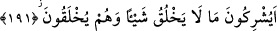

vererek şirk koşmalarından “yücedir.” pâktır.
Ayette zikredilenlerden maksad, Hz. Âdem ve Havva olsaydı fiilin ikil (tesniye)
olarak (Ammâ yüşrikâni) şeklinde gelmesi gerekirdi.
191. Kendileri yaratıldığı halde hiçbir şeyi yaratamayan varlıkları (Allah’a) ortak
mı koşuyorlar?
“Kendileri” yani putlar “yaratıldığı halde hiçbir şeyi yaratamayan” yani, hiçbir
şeyi yaratmaya aslâ güç yetiremeyen “varlıkları” Allah Teâlâ’ya “ortak mı
koşuyorlar?” Hakiki mabudun özelliklerinden biri de kullarının yaratıcısı olmasıdır.
Ayette putlar için akıllılara ait zamirlerin kullanılması, kâfirlerin putlar hakkında
akıllılar hakkında düşündükleri şeyleri düşünmelerinden ileri gelmektedir. Onlar,
putları insan şeklinde yaparlardı.
Putların yaratıcı olmadıkları belirtildikten sonra bir de yaratılmışlıkla nitelenmeleri,
haklarında müşriklerin düşündüklerinin tam aksine bir takım vasıflara sahip olduklarını
açıklamak içindir.
192. Halbuki (putlar) ne onlara bir yardım edebilirler ne de kendilerine bir
yardımları olur.
“Halbûki” putlar kendilerine tapanların başına zor bir durum gelince “ne onlara bir
yardım edebilirler,” Yani onlara hiçbir yardımda bulunamazlar. Onlara ne bir fayda
sağlayabilirler ne de onlardan bir zararı giderebilirler. “ne de kendilerine bir
yardımları olur.” Bizzat kendilerine de bir yardımları dokunmaz; başlarına gelen
hadiseleri defetmeye güç yetiremezler. Nitekim kendilerini kırmak isteyen veya
üzerlerine pislik atmaya yeltenen kimselere mâni olamazlar.
Haddâdî der ki: Müşrikler putların ağızlarına koku ve bal sürerlerdi. Sinekler onların
üzerine toplanırlardı da putlar onları kovmaya muktedir olamazdı.
193. Onları doğru yola çağırırsanız size uymazlar; onları çağırsanız da, sukût